인터넷정보관리사-2급 (2018-03-10 기출문제)
1과목: 인터넷의 이해
1. 다음 중 인터넷 관련 기술과 그에 해당하는 연도가 잘못 짝지어진 것은?
- TCP/IP 인터넷 표준 프로토콜로 제정 - 1982년
- DNS 개념 도입 - 1994년
- WWW 서비스 시작 - 1991년
- ARPANet 탄생 - 1969년
(정답률: 63%)

2. 다음 중 인터넷 주소 공간 할당을 담당하는 국제 인터넷 기구는?
- ICANN
- IANA
- IPC
- CERT
(정답률: 70%)
3. 다음 중 인터넷 네트워크의 핵심 프로토콜로 컴퓨터의 데이터 통신을 행하기 위해서 만들어진 프로토콜 체계는?
- TCP/IP
- HTTP
- FTP
- HTTPS
(정답률: 75%)
4. 다음 중 인터넷 주소체계에 대한 설명으로 가장 거리가 먼 것은?
- IPv6는 128비트 체계이다.
- IPv4 주소가 C 클래스에서 193.168.12.23 일 때, 호스트 ID는 23이다.
- IPv6는 브로드캐스트 기능이 있으며, 헤더 크기를 가변으로 갖는다.
- IPv4는 5개의 클래스 등급을 갖는다.
(정답률: 55%)
5. 다음 중 IPv4의 A클래스에 대한 설명으로 가장 거리가 먼 것은?
- 국가나 대형 네트워크에 사용된다.
- 1과 127은 특수목적의 IP주소로 예약되어 있다.
- 기본 넷마스크는 255.0.0.0이다.
- 사용 가능한 호스트 수는 16,777,214(224–2) 개이다.
(정답률: 49%)
6. 다음에서 설명하는 IPv4 클래스의 등급은 무엇인가?
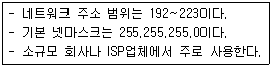
- A클래스
- B클래스
- C클래스
- D클래스
(정답률: 70%)
7. 다음중 ISDN에 대한설명으로가장 거리가먼 것은?
- ISDN은 3가지 종류의 채널이 있다.
- B채널은 64Kbps 전송속도 채널이다.
- D채널은 16Kbps, 64Kbps 전송속도의 채널이 있다.
- H채널은 16Kbps, 64Kbps, 384Kbps 전송속도의 채널이 있다.
(정답률: 55%)
8. 다음 설명에 해당하는 xDSL 기술은?
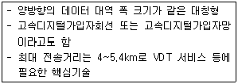
- HDSL
- ADSL
- VDSL
- RADSL
(정답률: 54%)
9. 전자상거래 유형 중 정부와 기업 간 거래를 의미하는 유형은?
- B to B
- G to B
- G to C
- B to C
(정답률: 64%)
10. 다음에서 설명하는 소셜 미디어의 특징으로 가장 알맞은 것은?
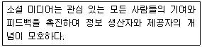
- 참여
- 공개
- 대화
- 커뮤니티
(정답률: 49%)
11. 다음 특징을 갖고 있는 소셜 미디어의 형태로 가장 알맞은 것은?
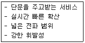
- 블로그
- 소셜 네트워크
- 위키피디아
- UCC
(정답률: 73%)
12. 다음 중 소셜 미디어의 단점으로 가장 거리가 먼 것은?
- 제도적인 통제수단이 적다.
- 소셜 미디어를 활용하면 광고비가 증가하기 쉽다.
- 보안상의 문제로 인한 사회적 비용이 발생할 수 있다.
- 중독 가능성이 높다.
(정답률: 67%)
13. 다음 설명에 해당하는 소셜 미디어는?
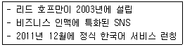
- 유튜브
- 블로그
- 플리커
- 링크드인
(정답률: 52%)
14. 다음에서 설명하는 클라우드 컴퓨팅 기술은?
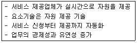
- 가상화 기술
- 서비스 프로비저닝
- 자원 유틸리티
- 보안 및 프라이버시
(정답률: 58%)
15. 다음 중 클라우드 컴퓨팅의 장단점에 대한 설명으로 가장 거리가 먼 것은?
- 컴퓨터 시스템의 유지보수 비용이 늘어난다.
- 시간과 인력을 줄일 수 있다.
- 서버가 공격당하면 개인정보가 유출될 수 있다.
- 전문적인 하드웨어 지식 없이 쉽게 사용할 수 있다.
(정답률: 64%)
16. 다음 중 빅데이터의 특징인 3V에 해당하지 않는 것은?
- Volume
- Valuable
- Velocity
- Variety
(정답률: 49%)
17. 다음 중 분산파일 시스템인 HDFS로 구성된 빅데이터 처리 프레임워크는?
- Hadoop
- C#
- Java
- python
(정답률: 58%)
18. 다음 중 안드로이드 폰의 운영체제를 해킹해 관리자 권한을 얻는 것을 무엇이라 하는가?
- 부팅(Booting)
- 루팅(Rooting)
- 후킹(Hooking)
- 푸싱(Pushing)
(정답률: 62%)
19. 다음 중 구글이 모바일 시장 진입을 위해 공개한 리눅스 기반의 운영체제는?
- ISO
- Android
- Windows
- Unix
(정답률: 62%)
20. 다음 중 저작권법과 관련된 용어의 설명으로 가장 거리가 먼 것은?
- 편집물은 저작물이나 부호, 문자, 음, 영상 그 밖의 형태의 자료의 집합물을 말한다.
- 배포는 저작물 등의 복제물을 공중에게 대가를 받고 양도 또는 대여하는 것을 말한다.
- 저작재산권은 저작자가 생존하는 동안과 사망한 후 70년간 존속한다.
- 저작인접권은 방송의 경우, 그 방송을 한 때의 다음 해부터 기산하여 50년간 존속 한다.
(정답률: 44%)
21. 다음 중 보호받지 못하는 저작물로만 구성된 것은?
- 헌법, 법원의 판결, 사실의 전달에 불과한 시사보도
- 사실의 전달에 불과한 시사보도, 2차적 저작물
- 편곡, 각색, 백과사전, 신문
- 백과사전, 잡지, 법원의 판결, 헌법
(정답률: 62%)
22. 다음 중 전자서명법에 대한 설명으로 가장 거리가 먼 것은?
- 공인인증서에는 가입자의 이름과 전자서명 검증정보가 포함되어 있어야한다.
- 인터넷진흥원은 공인인증기관에 대한 공인인증서 발급·관리 등 인증업무를 수행한다.
- 공인전자서명은 전자서명생성정보가 가입자에게 유일하게 속해야 한다.
- 서명자라 함은 공인인증기관으로부터 전자서명생성정보를 인증받은 자를 말한다.
(정답률: 32%)
23. 다음 저작권의 기술적 보호방법 중 그 유형이 다른 것은?
- 암호화 기술
- 디지털 워터마킹
- 접근제어
- DRM
(정답률: 52%)
24. 공동저작물의 저작재산권은 맨 마지막으로 사망한 저작자가 사망한 후 몇 년간 존속되는가?
- 50년
- 60년
- 70년
- 80년
(정답률: 72%)
25. 다음 중 저작인격권에 해당하지 않는 것은?
- 공표권
- 성명표시권
- 동일성유지권
- 복제권
(정답률: 51%)
26. 다음 중 시스템이 주어진 문제를 얼마나 정확하게 해결하는가를 나타내는 운영체제의 평가 기준은?
- 신뢰도
- 처리 능력
- 변환 시간
- 사용 가능도
(정답률: 60%)
27. 다음 중 전기적인 펄스를 이용하여 저장된 정보를 지울 수 있는 롬은?
- Mask ROM
- PROM
- EPROM
- EEPROM
(정답률: 44%)
28. 다음에서 설명하는 프로그램은 무엇인가?
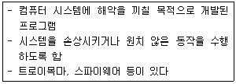
- 패치 프로그램
- 멀웨어 프로그램
- 쉐어웨어 프로그램
- 디버깅 프로그램
(정답률: 63%)
29. 다음 중 그래픽 소프트웨어를 모두 선택한 것은?
- ACDSee, Maya
- ACDSee, Auto CAD
- Lightworks, Gold Wave
- ACDSee, Gold Wave
(정답률: 44%)
30. 다음 중 32채널로 2.048Mbps의 최대 전송 속도를 갖는 회선은?
- T1
- T2
- T3
- E1
(정답률: 46%)
31. 다음 중 국가, 대륙 간 넓은 지역을 연결하는 정보통신망은?
- LAN
- MAN
- WAN
- VAN
(정답률: 65%)
32. 다음 중 텍스트 정보와 달리 정보의 흐름이 한 방향이 아닌 다양한 방법으로 전개되는 멀티미디어의 특징은?
- 통합성
- 대용량성
- 비선형성
- 양방향성
(정답률: 42%)
33. 컴퓨터를 이용한 자동교육 시스템으로 개인의 이해력에 대응하는 개별교육까지 실시하는 프로그램 학습을 의미하는 멀티미디어 응용분야는?
- CAI
- Kiosk
- Courseware
- VOD
(정답률: 48%)
2과목: 인터넷 자원 탐색
34. 다음 설명에 해당하는 프로그램으로 가장 적절한 것은?
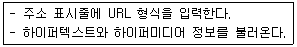
- 멀티미디어
- 웹브라우저
- 인터랙티브
- 클라이언트
(정답률: 66%)
35. ㉠에 들어갈 웹 브라우저로 바른 것은?
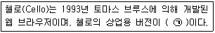
- 모자익
- 핫자바
- 넷스케이프
- 파이어폭스
(정답률: 48%)
36. 다음 설명에 해당하는 웹 브라우저는?
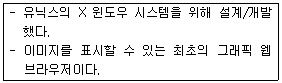
- 삼바
- 모자익
- 핫자바
- 아라크네
(정답률: 55%)
37. 사진이나 동영상을 표현할 수 없는 웹 브라우저는?
- 첼로
- 모자익
- 링크스
- 파이어폭스
(정답률: 46%)
38. 다음 설명과 관련 있는 웹 브라우저는?
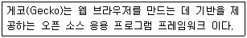
- 첼로
- 익스플로러
- 넷스케이프
- 파이어폭스
(정답률: 44%)
39. 다음 중 크롬 브라우저에서 악성코드나 피싱을 방지하기 위한 기술을 모두 고른 것은?
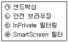
- ㉠, ㉡
- ㉠, ㉢
- ㉡, ㉣
- ㉢, ㉣
(정답률: 34%)
40. 다음 사례에서 활용할 수 있는 단축키는?
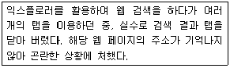
- Ctrl + F4
- Ctrl + K
- Ctrl + Shift + T
- Ctrl + Shift + Tab
(정답률: 61%)
41. 다음 중 크롬 브라우저에 대한 설명으로 가장 거리가 먼 것은?
- V8 자바스크립트 가상머신을 탑재하고 있다.
- 버전 27은 애플 주도로 개발된 웹킷 레이아웃 엔진을 사용하였다.
- 크롬은 PDF 뷰어가 내장되어 별도의 플러그인을 설치할 필요가 없다.
- 시크릿 모드는 인터넷 사용기록 및 다운로드 기록이 남지 않고, 창을 닫으면 다운로드한 파일도 자동으로 삭제된다.
(정답률: 45%)
42. 다음 중 파이어폭스 브라우저의 '사생활 보호모드'에서 저장이 가능한 항목은?
- 암호
- 쿠키
- 폼 및 검색 항목
- 다운로드한 파일
(정답률: 50%)
43. 다음 중 인터넷 익스플로러 11에서 PC의 기본 다운로드 폴더를 변경하고자 할 때 활용하는 메뉴는?
- 다운로드 보기
- 추가 기능 관리
- 호환성 보기 설정
- 고정된 사이트로 이동
(정답률: 54%)
44. 다음 작업을 수행하기 위한 인터넷 익스플로러11의 단축키는?
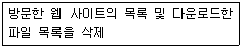
- Ctrl + Shift + Del
- Ctrl + Alt + Del
- Alt + D
- Ctrl + D
(정답률: 49%)
45. 다음 사례에서 가장 적절한 익스플로러 명령은?
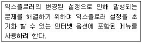
- [일반] 탭 - 삭제
- [고급] 탭 - 원래대로
- [고급] 탭 - 고급 설정 복원
- [프로그램] 탭 - 추가 기능 관리
(정답률: 55%)
46. 다음 중 로봇이 웹에 미치는 악영향에 해당하는 것은?
- HTML 코드가 변경된다.
- 클라이언트 PC를 다운시킨다.
- CGI 프로그램의 소스가 파손될 수 있다.
- 잦은 내용 검색으로 바이러스가 유포된다.
(정답률: 47%)
47. 검색엔진의 구성 요소에 해당하는 것을 다음에서 모두 고른 것은?
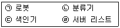
- ㉠, ㉡
- ㉠, ㉢
- ㉡, ㉢
- ㉢, ㉣
(정답률: 62%)
48. 다음 중 검색 엔진 로봇의 주요 기능에 해당하지 않는 것은?
- 자료의 수집
- 색인화 하기
- 인기 사이트 방문하기
- 데이터베이스 구축하기
(정답률: 46%)
49. 메타(META) 태그를 이용하여 로봇 배제를 위한 웹 페이지의 저장 구역과 ㉠에 들어갈 명령어가 알맞게 짝지어진 것은?
- 영역:Footer, ㉠:index
- 영역:Header, ㉠:index
- 영역:Footer, ㉠:noindex
- 영역:Header, ㉠:noindex
(정답률: 50%)
50. 다음 설명에 해당하는 검색엔진은?
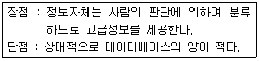
- 단어별 검색엔진
- 주제별 검색엔진
- 지능형 검색엔진
- 키워드 검색엔진
(정답률: 50%)
51. 다음 설명에 해당하는 검색 엔진은?
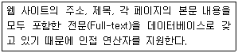
- 메타 검색엔진
- 단어별 검색엔진
- 디렉터리 검색엔진
- 하이브리드 검색엔진
(정답률: 33%)
52. 다음 설명에 해당하는 검색 엔진의 예로 옳은 것은?
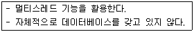
- 빙
- 야후
- 네이버
- 메타크롤러
(정답률: 53%)
53. 다음 설명에 해당하는 검색엔진의 구축방식은?
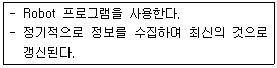
- 자동 인덱스 방식
- 메뉴얼 인덱스 방식
- 텍스트 인덱스 방식
- 에이전트 인덱스 방식
(정답률: 49%)
54. 다음 중 재현율을 높이기 위한 탐색 수단으로 적절한 것을 모두 고른 것은?
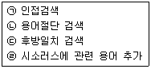
- ㉠, ㉡
- ㉠, ㉢
- ㉡, ㉣
- ㉢, ㉣
(정답률: 38%)
55. 다음에서 설명하는 검색 결과의 평가 척도에 해당하는 것은?
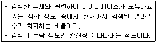
- 정도율
- 정확률
- 재현율
- 적합률
(정답률: 51%)
56. 다음 사례에 적합한 네이버의 서비스는?
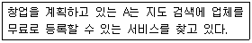
- 지도
- 네이버 캐스트
- 네이버 포스트
- 스마트 플레이스
(정답률: 48%)
57. 인터넷 익스플로러 11 설치 시 기본으로 설정되는 검색엔진은?
- 빙
- 줌
- 야후
- 네이버
(정답률: 59%)
58. 다음 중 정보검색 개념에 대한 설명으로 가장 거리가 먼 것은?
- 필요한 정보를 신속하고 정확하게 찾아내는 것을 목적으로 한다.
- 뉴스, 날씨, 이미지 등의 검색 및 자료를 다운로드 할 수 있다.
- 정보 검색을 잘 하기 위해서는 기본 원칙들을 지키는 것이 바람직하다.
- 검색된 모든 정보는 사용권한에 관계없이 누구나 자유롭게 사용할 수 있다.
(정답률: 67%)
59. 정보 관리사의 역할 중, '정보의 균등분배자'에 해당하는 내용은?
- 정보의 불평등에 따른 대중화 실현
- 이용자와 정보 자원과의 중개 및 상담
- 주제적인 지식을 활용한 정보 전달
- 고객의 요구에 알맞은 정보를 검색, 분석
(정답률: 49%)
60. 정보검색의 발전 모델 중 3단계인 '하이브리드'의 특징에 해당하는 것을 다음에서 모두 고른 것은?
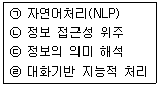
- ㉠, ㉡
- ㉠, ㉣
- ㉡, ㉢
- ㉢, ㉣
(정답률: 34%)
61. 다음 중 정보 검색에 관하여 바르게 설명한 것은?
- 리키지를 최대화할 수 있어야 한다.
- 검색 정보에 대한 출처와 사용권한을 주의해야 한다.
- 인터넷 상의 모든 정보를 검색엔진으로 검색할 수 있다.
- 연산자의 종류와 사용법은 정보검색에 영향을 주지 않는다.
(정답률: 57%)
62. 구글 검색 시 정확히 일치하는 결과를 검색하고자 할 때의 방법은?
- '*' 기호를 입력한다.
- 단어 앞에 '@'기호를 입력한다.
- 각 검색어 사이에 'OR'를 입력한다.
- 단어 또는 문구를 따옴표 안에 넣는다.
(정답률: 54%)
63. 다음 중 정보검색에서 사용되는 언어가 가지는 특성에 해당하는 것을 모두 고른 것은?
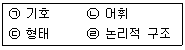
- ㉠, ㉡
- ㉠, ㉢
- ㉡, ㉣
- ㉢, ㉣
(정답률: 45%)
64. 다음 설명이 해당하는 정보에 관한 학문적 관점으로 본 정의는?
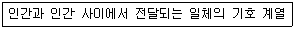
- 전통적 관점
- 자료처리적 관점
- 정보이론적 관점
- 행동과학적 관점
(정답률: 42%)
65. 다음 중 검색 방법을 다양화 하는 방법을 모두 고른 것은?
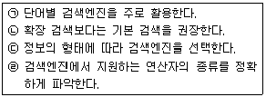
- ㉠, ㉡
- ㉠, ㉢
- ㉡, ㉣
- ㉢, ㉣
(정답률: 49%)
66. 다음 제시된 웹 사이트들을 통칭하는 용어는?
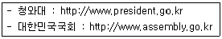
- 쿨사이트
- 공식사이트
- 보털사이트
- 포털사이트
(정답률: 69%)
3과목: 인터넷 윤리
67. 다음 중 스피넬로가 제시한 인터넷 윤리의 규범 원리가 아닌 것은?
- 예방의 원리
- 해악금지의 원리
- 책임의 원리
- 존중의 원리
(정답률: 45%)
68. 다음 중 정보사회의 순기능 및 역기능에 대한 설명으로 거리가 먼 것은?
- 개인 창의력 증대
- 지적 소유권 보호
- 누구나 참여 가능한 민주주의의 실현
- 외국 문화의 무분별한 유입으로 인한 문화적 획일성
(정답률: 33%)
69. 다음 중 방송통신심의위원회가 제시한 네티즌 윤리강령의 네티즌 기본정신이 아닌 것은?
- 사이버 공간은 정보 관리자가 건전하게 가꾸어 나가야 한다.
- 사이버 공간은 공동체의 공간이다.
- 사이버 공간의 주체는 인간이다.
- 사이버 공간은 누구에게나 평등하며 열린 공간이다.
(정답률: 63%)
70. 다음 중 이메일 네티켓에 대한 설명으로 가장 거리가 먼 것은?
- 전자우편은 자주 점검하고 필요 없는 자료는 삭제한다.
- 광고성 메일을 보낼 때에는 제목에 '광고'라는 문구를 명시한다.
- 파일은 가급적 압축하지 않고 첨부하며, 바이러스 감염 여부를 꼭 확인한다.
- 회원들을 대상으로 메일을 보낼 때에도 '수신 거부' 기능을 제공하는 것이 좋다.
(정답률: 58%)
71. 다음 괄호 안에 들어갈 가장 적절한 인터넷 사기 유형을 순서대로 나열한 것은?
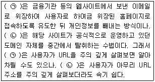
- ㉠-피싱, ㉡-파밍
- ㉠-피싱, ㉡-비싱
- ㉠-파밍, ㉡-피싱
- ㉠-비싱, ㉡-파밍
(정답률: 54%)
72. 사이버 폭력의 피해자가 되지 않기 위한 준수사항으로 가장 거리가 먼 것은?
- 성별이 드러나는 아이디를 사용한다.
- 불법 유해 사이트는 신고센터에 신고한다.
- 원하지 않는 메일을 받으면 답장하지 않는다.
- 온라인에서 만난 사람과 직접 만나는 일은 신중하게 결정한다.
(정답률: 73%)
73. 인터넷 사기피해 사례나 업체 정보를 검색해 볼 수 있는 인터넷 사기피해 정보공유 사이트는?
- 국세청(www.nts.go.kr)
- 더치트(www.thecheat.co.kr)
- 인터넷우체국(www.epost.go.kr)
- 공정거래위원회(www.ftc.go.kr)
(정답률: 53%)
74. 전자상거래 사기를 예방할 수 있는 방법으로 가장 거리가 먼 것은?
- 신뢰할만한 유명 쇼핑몰을 이용한다.
- 가급적 현금 보다는 신용카드로 거래한다.
- 대형 오픈 마켓의 개별 등록업체는 믿고 거래해도 된다.
- 급전을 이유로 싼 가격을 제시하며 직거래를 제안하는 사람은 주의한다.
(정답률: 56%)
75. 다음 설명에 해당하는 증상은 인터넷 중독 과정 중 어느 단계인가?
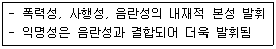
- 호기심
- 대리만족
- 현실 탈출
- 인터넷 심취
(정답률: 39%)
76. 인터넷 중독의 증상 중, 자극 차단 시 부작용으로 인해 이를 중단하지 못하는 상태를 뜻하는 것은?
- 강박적 사용
- 일탈 행동
- 내성
- 금단
(정답률: 62%)
77. 한국형 인터넷 중독 자가진단 프로그램인 K-척도를 개발한 기관은?
- 한국정보화진흥원
- 한국인터넷진흥원
- 한국콘텐츠진흥원
- 청소년미디어중독예방센터
(정답률: 30%)
78. 한국형 인터넷 중독 자가진단 프로그램인 K-척도의 모델이 되었던 미국의 인터넷 중독 진단도구는?
- G-척도
- S-척도
- CSG-척도
- Young척도
(정답률: 46%)
79. 인터넷 중독 중 경증을 치료할 때 치료과정에 해당하는 설명을 다음에서 모두 고른 것은?
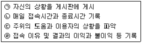
- ㉠, ㉡
- ㉢, ㉣
- ㉠, ㉡, ㉣
- ㉡, ㉢, ㉣
(정답률: 34%)
80. 다음 중 인터넷 게임 중독을 예방하기 위한 지침으로 가장 거리가 먼 것은?
- 게임친구보다는 가족과 더 많이 대화한다.
- 온라인 게임 외에 다양한 대안활동을 찾아본다.
- 게임시간 조절이 어려우면 전문상담기관을 이용한다.
- 게임을 시작하면 승부욕을 가지고 계속 이기려고 노력한다.
(정답률: 69%)